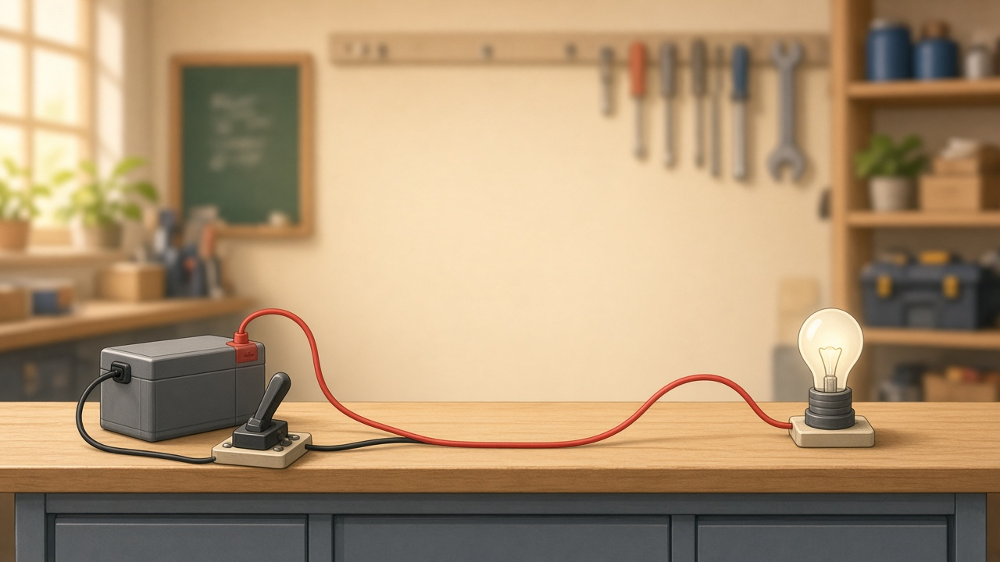

Accendi la lampadina
Tocca i fili per metterli o toglierli. Chiudi l’interruttore. Solo con circuito chiuso e interruttore ON la lampadina si accende.
Simulazione sul banco

Quiz · poli e lunghezza filo
Vero o falso? «Il filo più lungo del circuito è il polo negativo (−).»
Quiz · resistenza R
Stesso materiale e stessa sezione: cosa succede alla resistenza se il filo è più lungo?
Quiz · parti della lampadina
Quale parte si scalda e produce la luce?
Quiz · simbolo E
Cosa indica E sul generatore?